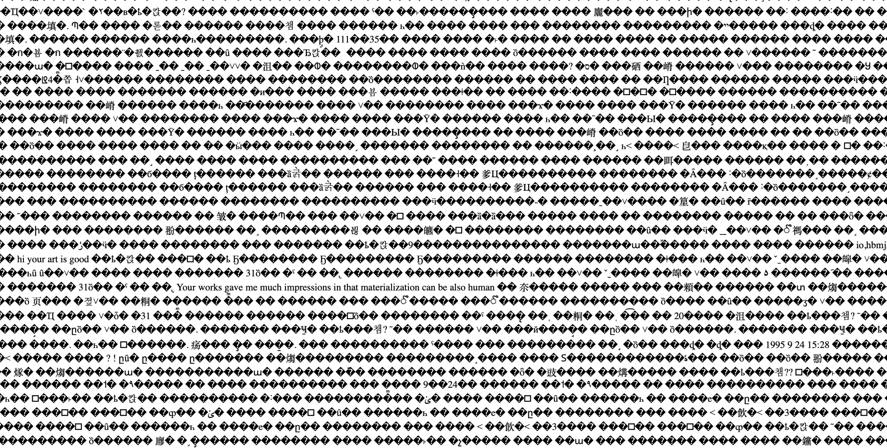
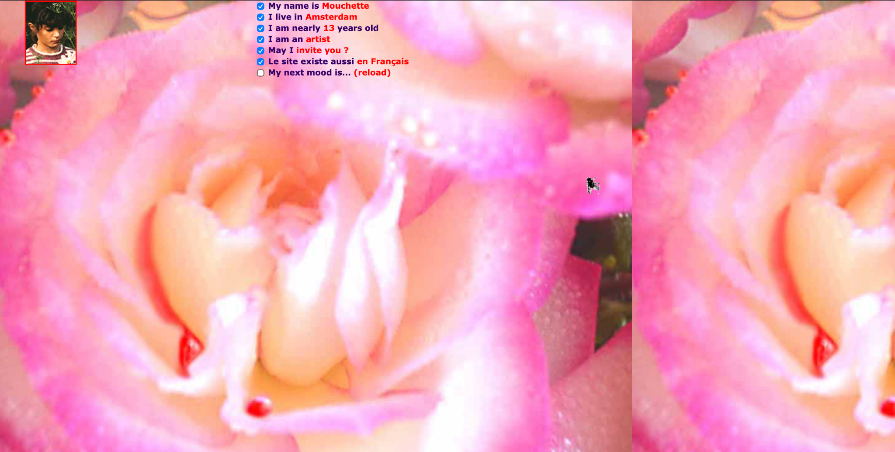
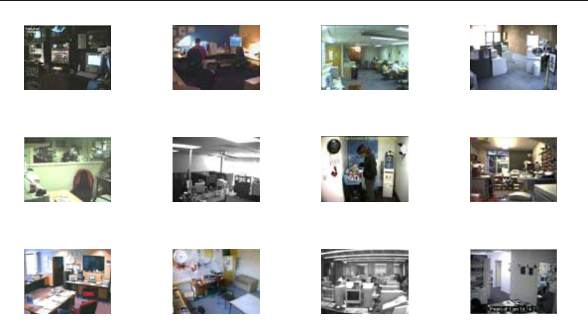

NET ARTWORK 01
The World’s First Collaborative Sentence
An interactive online artwork in which users contribute to a continuously growing sentence. Because anyone can add to it, the work never has a fixed ending and exists through collective participation.
ENTER WORK
NET ARTWORK 02
Mouchette
An interactive website presented as the online identity of a fictional teenage girl. Users move through the work by clicking links and exploring pages, building their own sense of the character and narrative through navigation.
ENTER WORK
NET ARTWORK 03
Refresh
A web-based artwork that combines live webcam feeds with staged images and fictional narratives. By asking viewers to compare, interpret, and question what they see, the piece makes participation part of how the work is understood.
ENTER WORK